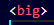
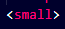

Big Tag Ka Use
KUNAL SIROHI
tag ka use text ka size thoda bada dikhane ke liye hota hai.
IMPORTANT:
- Ye tag sirf text ko visually thoda bada karta hai
- Ye SEO ya semantic meaning add nahi karta
- Modern HTML me ye tag DEPRECATED hai (future me avoid kiya jata hai)
Use case:
- Sirf learning ke liye
- Real projects me CSS use hota hai (font-size)
Small Tag Ka Use
© 2026 Sirohi Aarti Book
tag ka use text ko chhota dikhane ke liye hota hai.
IMPORTANT:
- Ye text ka size kam karta hai
- Semantic meaning thoda hota hai (fine print, disclaimer type text)
Use case:
- Copyright text
- Terms, disclaimer
- Side notes
Hr Tag Ka Use
tag ka use page ke beech me horizontal line draw karne ke liye hota hai.
IMPORTANT:
- Ye closing tag nahi hota
- Ye content ke beech separation dikhata hai
- HTML5 me iska semantic meaning hai: thematic break
Use case:
- Section divide karna
- Aarti ke beech separation
- Article ke parts alag dikhane ke liye